나전 음공가 idle 해상도 비교
Phase 11-B4 · AD APPROVED · QA PASS같은 우측 90도 중립 자세를 1:1 배율로 비교합니다. 192×192는 불투명 높이 156px, 256×256는 183px이며, 256 버전은 720p 화면 세로에 약 3.93명이 들어가는 크기입니다. 현재는 해상도 선택용 정적 샘플로 Godot 런타임에는 연결하지 않았습니다.
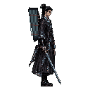
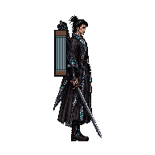
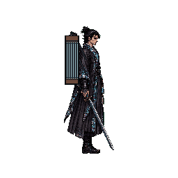
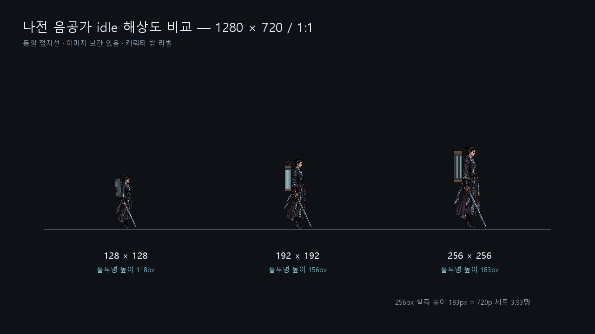
주인공 컨셉 — 사이버펑크 조선
Phase 11-A APPROVED4종 탐색안 가운데 왼쪽 두 번째 ‘나전 음공가’를 정식 디자인으로 확정했다. 검은 도포, 나전칠기 회로, 6현 사이버 거문고 음현이 후속 아이들·이동·공격 스프라이트의 기준이다.

나전 음공가 8방향용 5방향 아이들
Phase 11-B3 · AD APPROVED · QA PASS애니메이션 없이 북·북동·동·남동·남의 정지 이미지 5장을 제작했다. 북서·서·남서는 각각 북동·동·남동을 좌우 반전해 사용하며, 전 방향이 128×128 캔버스와 접지선 Y=122를 공유한다.
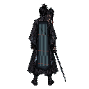
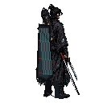

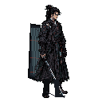
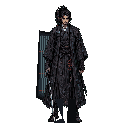
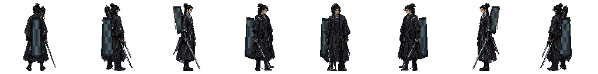
나전 음공가 128×128 네이티브 아이들
Phase 11-B2 · AD APPROVED · QA PASS64×64 논리 도트 확대 대신 128×128 그리드에서 얼굴·나전 문양·직검·6현 음현을 직접 정리한 개선판이다. 4프레임 모두 47×118px 실루엣과 접지선 Y=122를 유지하며 흉곽과 도포 자락만 미세하게 호흡한다.

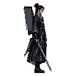
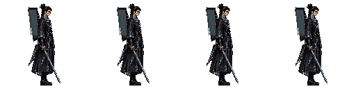
이전 64×64 논리 도트 버전
Phase 11-B · AD APPROVED · QA PASS90° 동쪽 측면 실루엣과 접지·체적을 고정한 4프레임 루프다. 얼굴·손·직검·6현 음현·발은 움직이지 않고, 흉곽과 뒤 자락 내부 명암만 한 픽셀 호흡한다. Godot 런타임 연결은 Phase 11-C에서 진행한다.

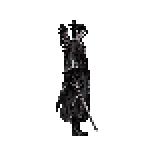
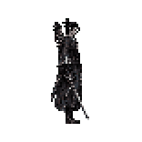
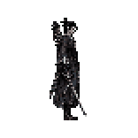
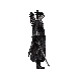
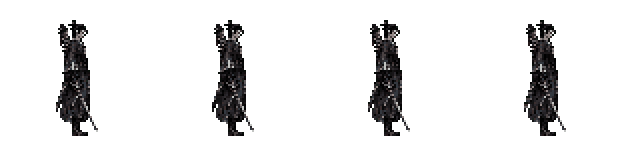